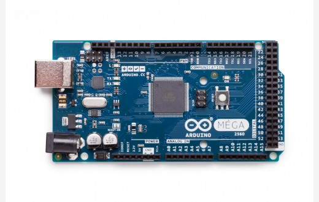
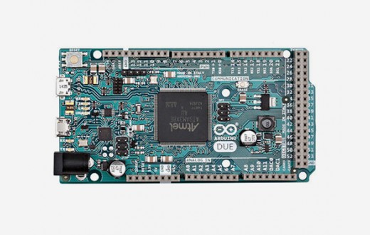
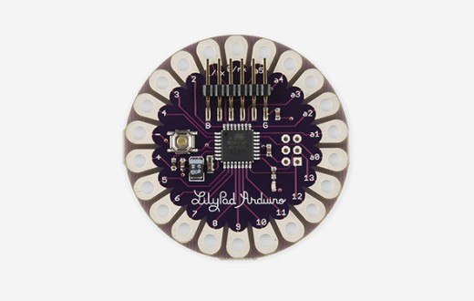

가장 대표적인 보드이다.

아두이노 레오나르도 이다.
공식 사이트의 설명에 의하면 아두이노 우노와 레오나르도는 비슷하지만
컴퓨터에 연결해서 마우스나 키보드를 제어 가능하도록 만들어졌다.

Mega는 위 두 종류와는 다르게 고급 사용자용 이라고 할 수 있다.
사진을 보면 알 수 있듯이 핀의 개수가 훨씬 많다.
3D프린터, 로봇 프로젝트에 활용하는데 권장한다.

Due는 아두이노 보드 중 최초로 32bit ARM코어의 MCU를 탑재하였다.
규모있고 정밀성이 요구되는 프로젝트를 위한 보드이다.
주의할 점은 다른 아두이노 보드와 달리 이 보드의 입출력 핀은
최대 3.3V의 전압 하에서 동작한다.
그 이상의 전압은 보드에 손상을 줄 수 있으므로 주의해야 한다.

이 밖에 웨어러블 디바이스를 위한 보드도 있다.